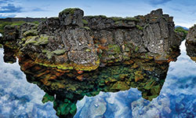
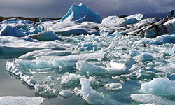
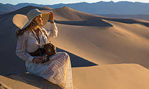
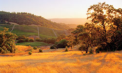
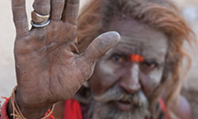
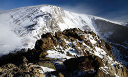
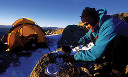
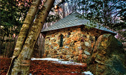
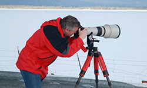

Presentations
Mike's Camera is proud to present the fore-most experts in photography to help you get the most from your camera in your journeys. Seating is first come first served, so make sure you are there in time to see your favorites!
Around the World with a Digital Camera
Main Stage • 11:45AM – 12:30PM

Rick will take you to his favorite travel destinations - just a few of the almost 100 locations he has been to on the planet. For each photograph, Rick will share a photography tip, trick or technique. Rick begins his talk by taking you to Myanmar (formerly Burma), after which you will explore Mongolia, Historic Route 66, our National Parks and more!
Rick will share with how to see light, how to control light and how to play with light as you photograph subjects along your journey. He’ll also give you valuable techniques and tools to compose and expose your photographs better – illustrating the difference between taking pictures and making great photographs.All Skill Levels welcome!
Photographing in Chilly Conditions

Theater B • 2:00PM – 2:30PM
Rick has been there, done that. Among his favorite travel locations are Iceland, Antarctica, Bosque del Apache, New Mexico and the sub-Arctic. Join Rick as he shares with you his techniques for dressing for success and getting the best shot in adverse conditions!
A Unique Opportunity to Learn More!
On-Location Model Shoot
City Park, Denver • Sunday, June 15 • 2:00PM – 6:00PM

Take advantage of this unique opportunity to shoot side-by-side with Rick Sammon (author of 36 books and 11 apps). In this workshop, Rick will show you how to master your flash and how to control the light with reflectors and diffusers. Two models will be on this shoot. Rick will have assistants from Mike's camera on hand to helps with the shoot and with accessories!
The workshop will start with a short presentation from Rick Sammon on lighting photographing people on location. As a group we’ll then head over to City Park to put the skills you learned into action! We’ll have two models and split the group into two so that everyone will have a chance to interact and work with the models in multiple locations around the park. All Skill Levels welcome!
Due to the hands-on nature of this workshop, class size is limited to 20 people
Getting the Most out of Your Travel Photography
Main Stage • 12:45PM – 1:30PM

In this engaging seminar, intrepid travel shooter Andy Katz will cover the dos and don'ts of travel photography. From where to find the best places to photograph to how to get the most out of every destination you visit, Katz will offer firsthand advice that is sure to impact your future image making.
Andy will teach you how to approach the subjects you wish to photograph, how subject matter is influenced by lighting and how the sun can affect your shooting. He’ll also review with you locations and subjects to avoid when doing travel work. Most importantly, Katz’s seminar will whet your appetite for the pleasure that travel photography has to offer, no matter where you end up! All skill levels welcome!
The Do's & Don'ts of Travel Photography
Theater A • 2:30PM – 3:00PM

If you miss Andy Katz’s presentation on the main stage, come join us for a shortened version of his talk at Theater B in the Colorado Photo Expo section. Andy will give firsthand advice that is sure to impact your future image making no matter where you’re travels take you! All skill levels welcome!
A Unique Opportunity to Learn More!
Seeing & Controlling Light Hands-on Workshop
Chautauqua Park, Boulder • Sunday, June 15 • 3:00PM – 7:00PM
Take advantage of this unique opportunity to shoot side-by-side with Sony Artisan of Imagery Andy Katz! Andy will teach you how to see and control light to take better photographs of both people and landscapes!
The workshop will start with a short presentation from Andy Katz that will go over lighting, how to see it and control it. Andy will also share his expertise with tips on composition, exposure and the best gear to use when shooting outdoors. Then as a group we’ll head over to Chautauqua Park to put your skills into action. Andy will show plenty of demos and well as give one-on-one shooting advice during the workshop. This workshop will be a relaxed fun approach to improving your photography!
Due to the hands-on nature of this workshop, class size is limited to 20 people
Europe Through the Back Door
Main Stage • 10:00AM – 11:30AM
Rick shares lessons he’s learned from a lifetime of travel. His entertaining, information-packed 90-minute slideshow lecture will teach you all the latest on stretching your travel dollar, avoiding crowds, packing smart, and eating and sleeping well. When he’s ripped off on the road, he celebrates, happy to go home and teach his traveling students about the latest scam. Learn from his mistakes rather than your own. After spending a third of his adult life living out of a rucksack in Europe, Rick knows exactly how you can enjoy maximum travel thrills for every mile, minute, and dollar in your next adventure. Join the travel expert – acclaimed for his bestselling guidebook series, public television series, and public radio shows – as he shares all the latest in smart European travel. Freshly back from lots of travels, Rick Steves explains the practical, money-saving ins and outs of independent travel. His 90-minute seminar is packed with tips on getting the most out of every mile, minute, and dollar on your next trip.
Book Signing 11:30AM - 12:30PM
Travel as a Political Act
Main Stage • 2:00PM – 3:00PM
Rick speaks on how travel has broadened his perspective and why that matters. In an age with so many Americans are being dumbed down and manipulated by fear, Rick makes the case that a traveler can be much like the medieval court jester—he can leave the castle, learn what’s going on out there, come home, and tell the truth. The USA is 4% of this planet and it is more important than ever that we understand what’s going on with the other 96%. Sharing the lessons learned from a lifetime of exploring, Rick explains how, by traveling thoughtfully, we can take home the greatest souvenir: a broader perspective.
Book Signing 3:00PM - 4:00PM
Traveling Mirrorless - Capturing Awesomess!
Using Micro 4/3 Cameras for Travel Photography
Theater A • 11:00AM – 11:30PM
As we become more mobile and travel - are we putting too much emphasis on the gear and not the experience? Regardless if we are visiting our local zoo, a National Park or traveling around the world – we want to capture awesome imagery while being in the moment and enjoying the experience.
The benefits of traveling with mirrorless cameras are plenty fold – small size and weight, less conspicuous, ease of use and awesome image quality. After visiting every continent except Antarctica and over 44 of the 50 States, William has an appreciation for keeping it simple, while creating images that tell a story. William will share images from these voyages and discuss how to create photographs with impact using the latest mirrorless camera systems.
Some of the benefits of using Micro 4/3 cameras for travel include:
- Weight and compact size.
- Hybrid Photography – shoot both stills and video.
- Availability of lens and adaptability of existing lens
- Ease of editing images on the go.
- Less Stress!!!
Items to be covered will include:
- Why use mirrorless cameras versus DSLR’s
- Equipment considerations – including accessories.
- Preparation - what to do before your trip to increase the odds of capturing great photographs.
- William’s top five secrets for great travel images!
- How to share your travel photos.
- Post production – the finishing touches.
Learn to travel comfortably and securely with all your camera gear!
Theater B • 10:30AM – 11:00AM

Learn with LowePro how to travel comfortably and securely with all your camera gear! We’ll cover the various types of Lowepro bags, their uses and the latest cutting edge innovations. You’ll also get tips for managing and protecting your photographic equipment in difficult shooting scenarios and we’ll wrap up the presentation with a Q&A session to make sure you walk away with the most valuable information for your travels.
Steady Shots Secured to Virtually an Surface
Theater B • 12:00PM – 12:30PM

Learn with Joby how to secure your camera and accessories to almost any surface while traveling! We’ll cover shooting techniques with the tripods and clamps, as well as, their various additional creative uses. You’ll also get tips for placing lights and cameras to get unique and interesting images and we’ll wrap up the presentation with a Q&A session to make sure you walk away with the most valuable information for your travels.
Full Frame vs. Crop Sensor with the Canon EOS System
Theater B • 1:30PM – 2:00PM
Canon will walk you through the EOS System giving you a complete rundown of what technology is available to you and the advantages of each system, from image capture thru the finished printed image.
John will review the following topics during his presentation:
- EOS DSLR cameras, why 2 image sensor types?
- Still & Full HD Video, from the same DSLR camera!
- EF Lens, why optics are so important!
- Printing, Professional image quality from Canon Pixma printers.
- The solution is complete with Canon!
The Road Less Traveled
Theater A • 10:30AM – 11:00AM

Journey with Frank Smith, part of the Olympus Visionary program as he shares about his experiencing photographing where most travelers don't go. From the birth of a nation in South Sudan to sex trafficking in Mumbai, disabled orphans in Haiti, Frank has taken his camera to areas most would never venture. He has helped to capture the story to aid organizations in support of their cause. Additionally Frank has traveled and photographed festivals in India where over 30 million people migrate to worship along the Ganges River. "The Olympus equipment is not only more portable but it is also less intimidating to those being photographed in this less traveled places."
The Joy of Light and No Bag Fees
Theater B • 1:00PM – 1:30PM
Traveling continues to become more restricted on what you can carry and what you can't. Who wants to check their equipment when traveling on a photo shoot? My solution - the OM-D system by Olympus! This mirror-less camera system.... Is easy to pack and is of exceptional quality. Travel through India, Atacama, Iceland and other areas and see the light through my camera and lenses.
Capturing Stunning Images with Canon Lenses
Theater A • 11:30PM – 12:00PM

Learn to create stunning images on your travels with Canon expert Shawn Weishaar! Shawn will walk you through when and why to use specific lenses and what the advantages and/or disadvantages are to each one. You’ll get an overview or compression, depth of field, distortion and other effects created by each lens. You’ll walk away from this lecture with the knowledge to easily grab the right lens to create the best images possible on your trip!
Nikon and the Ease of Connectivity
Theater A • 10:00AM – 10:30AM
Capture and post your vacation images easily before you return to your computer with a Nikon Camera!
Picture Your World through Nikon Glass
Theater A • 1:00PM – 1:30PM
See the difference with Nikkor glass. A large selection of lenses for all types of photography, wide angle to telephoto. Choose the right lens for your photography.
Spring 2014 Featured Vendors